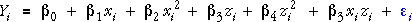

Energy expenditure of bees
We first examine the linear model for energy expenditure,

The diagram below shows the fitted values from this model (red) and the fitted values for the factor model whose fitted value at each x-z combination is the mean of these observations (blue).
In the anova table, the sum of squares for lack of fit is the sum of squared differences between these two sets of fitted values. Its associated p-value is close to zero giving strong evidence that the model with linear terms in both variables is not adequate.
(This should come as no suprise — after all, we found strong evidence of curvature and interaction in earlier pages!)
Model with curvature and interaction
We now examine the goodness-of-fit of the model with quadratic terms and interaction that was examined on the previous page.

Again the fitted values for this model are shown in red and those for the factor model are shown in blue. (To make the diagram simpler, the red fitted means have been joined by straight lines instead of quadratic curves.)
The two sets of fitted values are now much closer, so their sum of squared differences (the lack-of-fit sum of squares) is much smaller. The associated p-value for lack of fit is 0.2397, so there is no evidence that the model with quadratic terms in x and z and a simple interaction term does not underly the data.